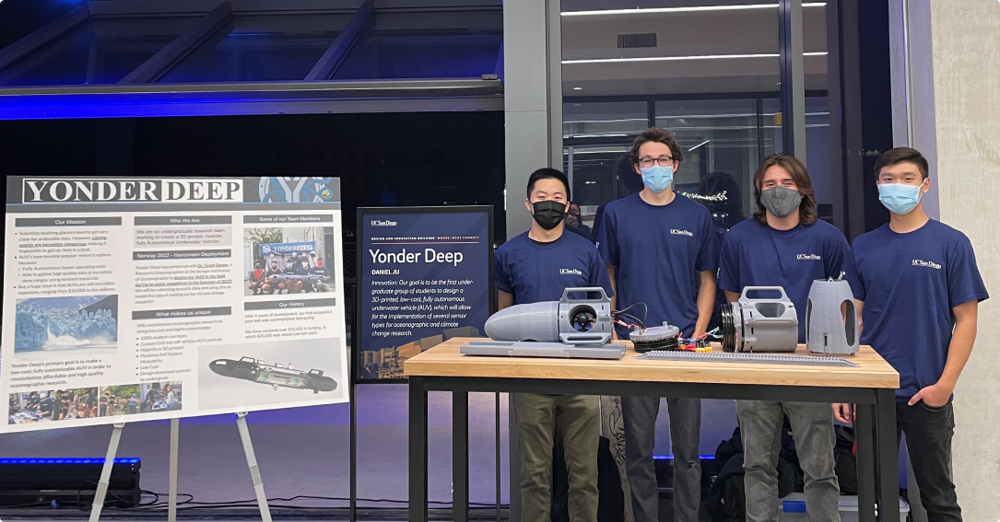
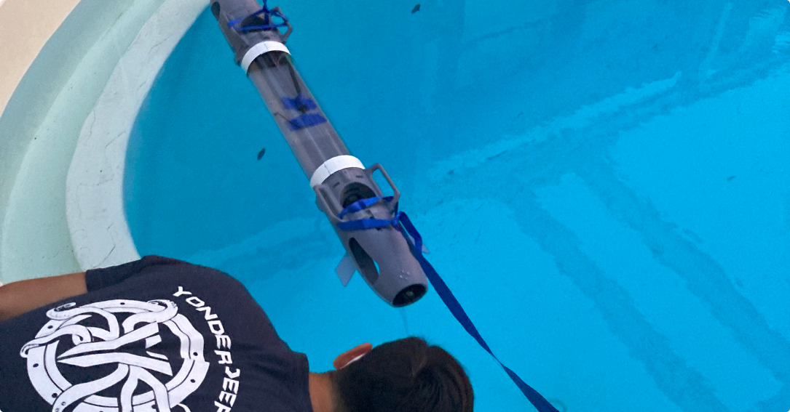
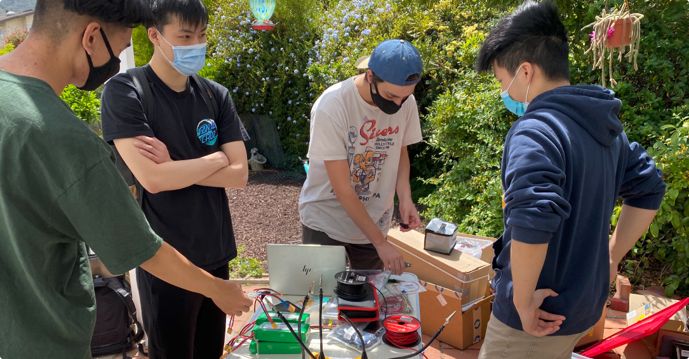

Our most exciting upcoming mission is an expedition to study artic glaciers in Svalbard, Norway in the summer of 2023. In collaboration with Grant Deane of Scripps Institution of Oceanography, our AUV “Nautilus” will be used to make subsurface measurements close to the terminus of a glacier, of sound produced by melting ice.
3rd pool test, another big milestone! First time feeding live control commands to the AUV and first time ever testing full scale dive commands.
Second ever pool test! Tested water tightness of improved design and justified assembly/design decisions.
Presented our work at the grand opening of UCSD’s Design and Innovation Building!
First ever AUV pool test! Tested pre-programmed movement commands, watertightness, and ease of assembly. Huge milestone for Yonder Deep that legitimized our mission!
Over the course of 3 in person meetings nearing the end of the year, our first full-scale AUV was fully manufactured and assembled!
2nd CAD iteration finished.
Proof of Concept AUV successfully tested! Transition from this point to full-scale development.
Conception of Yonder Deep! We were founded to address issues of climate change by creating a fully autonomous, 3D-printed AUV.